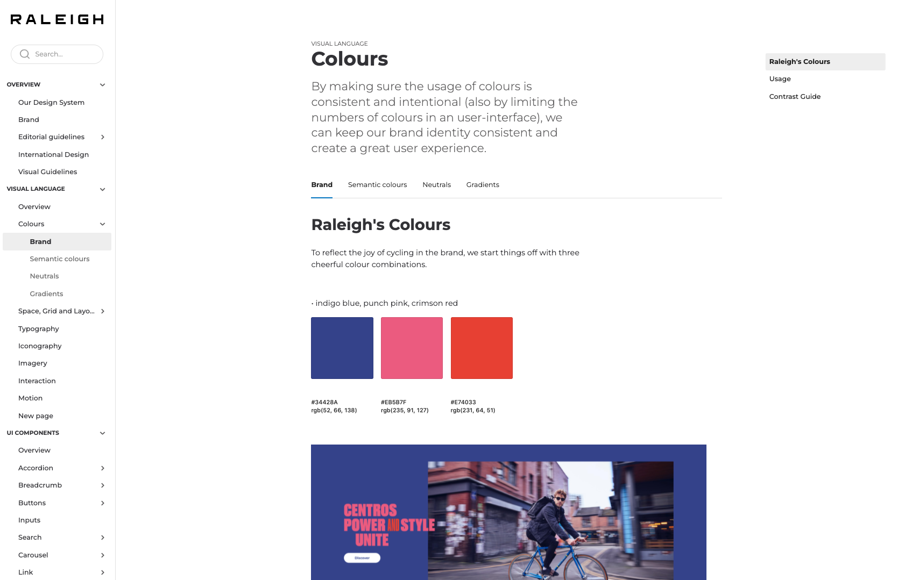
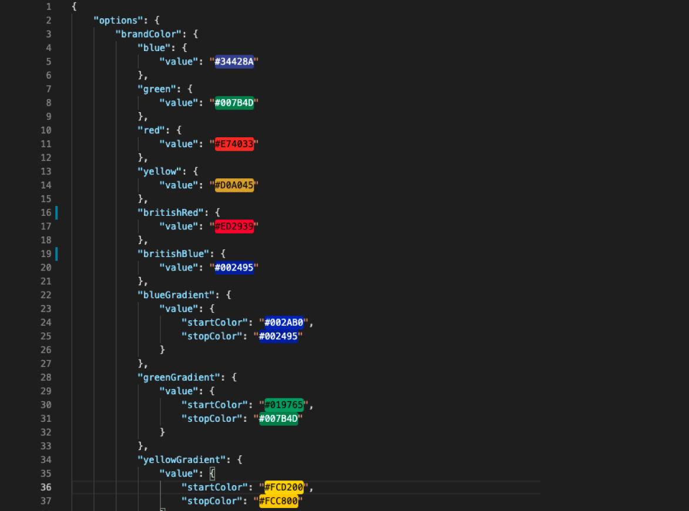
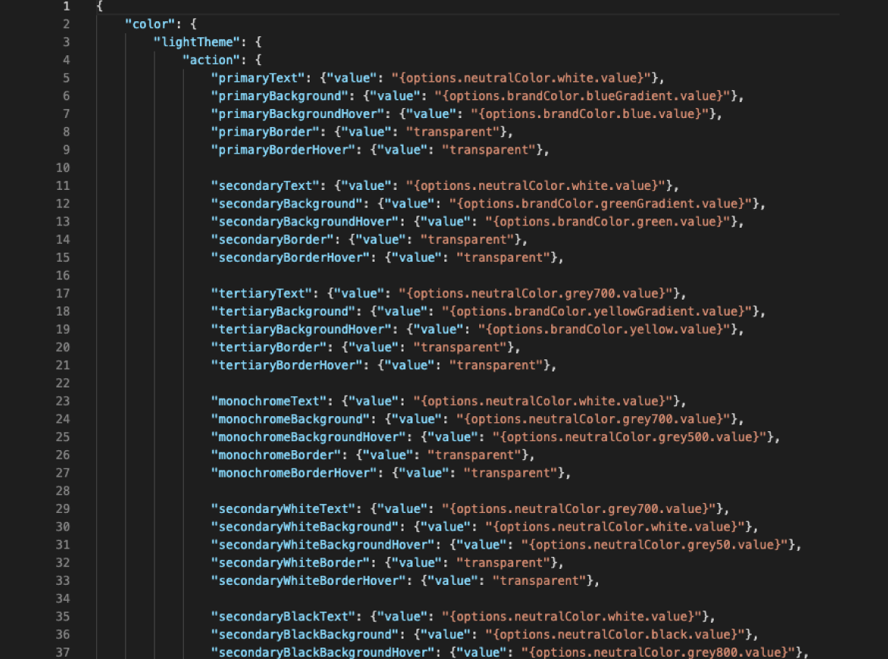
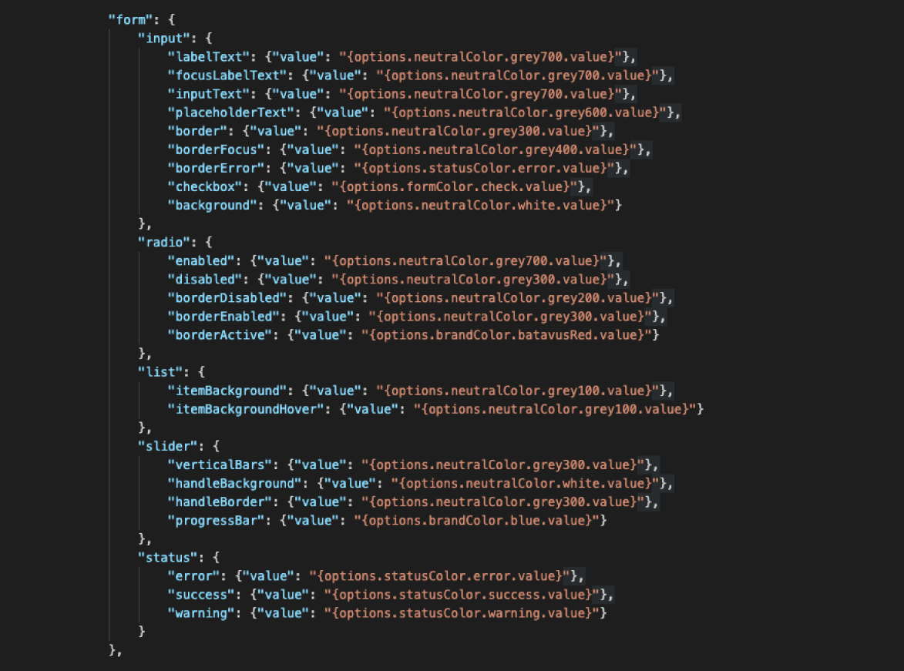

Creating a scalable international design system for a headless e-commerce platform.
My role:
UX Design, UX Research, UI Design,
Accell is one of the biggest bike distributors in Europe. The Dutch company has 20 brands in total, 8 of these brands that make up our offering being “strategic brands”. Accell has traditionally been a very B2B driven company but a few years ago really saw the value in B2C and with 2020 we seen the importance of growing this channel was further underlined. The digital team was formed to help fully realise the benefit of the D2C market.
To build a scalable e-commerce platform and gradually migrate our brands across to our new digital ecosystem. Our brands were hosted on outdated/outsourced platforms so with our mission we seek to benefit from the economies of scale.
To empower our users to have a better omnichannel experience for buying our bikes. We needed to have the technology that could serve content from our websites all the way to bike apps, thus providing a more rounded omnichannel experience for our brands customers.
So one of our labours of love in this process as designers was the creation and maintenance of a scalable design system.
So why was that important?
A systematic approach to design. It is a definition of elements such as typography, colours, UI components, codes and guidelines that we use repeatedly and consistently to build our websites and products in across channels.
Our design system helps to bring order and consistency to our digital products. They help to protect our brands, improve user experience and increase time to market and efficiency of how we design and build products. It holds us to high standards, keep teams on the same page, and helps to onboard new team members.
Tools/Frameworks we manage our design system with:
Figma (Initially Sketch but migrating to Figma), Storybook, Zeroheight, OOUX, Design tokens.
Who our design system is for:
Visual designers, UX designers, Developers, Marketeers, Content editors, Creative agencies etc.

With every brand needing more customisable design features and specific elements it can be quite difficult to maintain the scalability in the international sense. So to protect the scalability of our design system we adopted an important concept while building our set up called OOUX (Object Oriented UX).
Object Oriented UX offers a better way to break up complexity, allowing us to work iteratively and holistically. Instead of slicing up a system by verbs, OOUXers slice by nouns.
Objects first. Mobile first. Content first.
I've included a talk by the pioneer of the approach Sophia V Prater, where she explains the concept in excellent detail.
Some extra reading if you are keen on the concept:
alistapart.com/article/object-oriented-ux
alistapart.com/article/ooux-a-foundation-for-interaction-design
The final tool in our scalable design system are our Design tokens. They are the visual design atoms of our design system — specifically, they are named entities that store visual design attributes. We use them in place of hard-coded values in order to maintain a scalable and consistent visual system for the UI development of our platform.
So what are design tokens? Design tokens are all the values needed to construct and maintain a design system — spacing, colour, typography, object styles, animation, etc. — represented as data. They're used in place of hard-coded values in order to ensure flexibility and unity across all screen sizes. Our tokens cover various options for brands including dark themes, component states, and much more.
Our design system offers options. Options are visual identity properties. In the example you can see how colours for a brand are built up.

Our design system submits decisions. Decisions are options applied to contexts. In the example you can see where we make the decision to call on the blueGradient option to a background.

The result of these two means that our “stylesheet” is produced in code by a collection of decisions; this can be seen in the example above. Here options and decisions aren't buried in Sass files. Instead, they are centralised and propagated as tokens for any designer or developer adopting the system in an easy-to-use predictable format.

So in summary our design tokens are a human-readable, abstraction of visual styles, that sync with all the style files in the system.
We have now successfully migrated 3 of our strategic brands and are well on course for our next big launch. Feel free to check them out:
What I've shared is only a small part of the story so If you'd like to know more about my work at Accell please feel free to get in touch with me I'd love to tell you the full story.